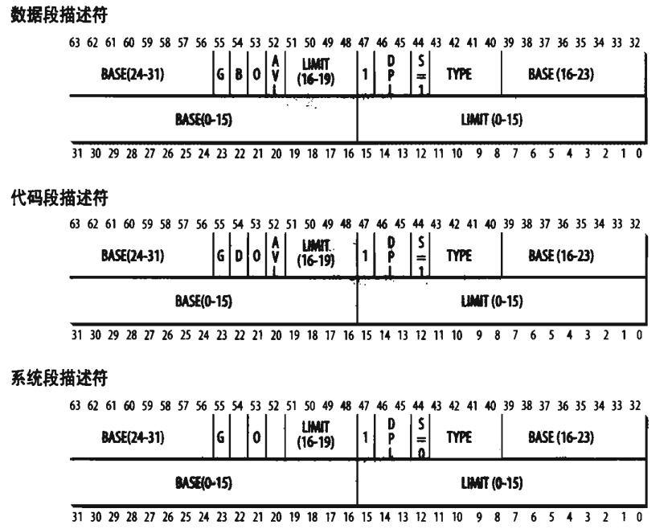

Linux内核学习(二)：内存寻址
内存管理部分针对的是80x86微处理器如何进行芯片级的内存寻址，Linux又是如何利用寻址硬件的…
一、内存地址
逻辑地址（logical address）：
- 包含在机器语言指令中用来指定一个操作数或一条指令的地址。每一个逻辑地址都由一个段（segment）和偏移量（offset）组成，偏移量指明了从段开始的地方到实际地址之间的距离。
线性地址（linear address）：
- 是一个32位无符号整数，可以用来表示高达
4GB的地址。通常使用十六进制数组表示，范围从0x00000000到0xffffffff。
物理地址（phycical address）：
- 用于内存芯片级内存单元寻址。物理地址由32位或36位无符号整数表示。
内存控制单元（MMU）通过一种称为分段单元（segment unit）的硬件电路把一个逻辑地址转换成线性地址，接着，第二个称为分页单元（paging unit）的硬件电路把线性地址转换为一个物理地址（图1-1表示该过程）。
在多处理系统中，所有CPU都共享同一内存，这意味着RAM芯片可以由独立的CPU并发地访问。由于在RAM芯片上的读或写操作必须串行地执行，因此存在一个内存仲裁器（
memory arbiter）的硬件电路插在总线和每个RAM芯片之间，其作用:某个RAM芯片空闲，准予一个CPU访问，如果该芯片忙于为另一个处理器提出的请求服务中，就延迟这个CPU的访问。
二、硬件中的分段
自80286模型开始，Intel微处理器以两种不同的方式执行地址转换，分别为实模式（real mode） 和保护模式（protected mode）。
2.1 段选择符和段寄存器
逻辑地址的组成：
段标识符
16位长的字段，被称为段选择符（Segment Selector）。
格式：
- 索引号指定了放在
GDT或LDT中的相应段描述符的入口。 TI指明段描述符是在GDT（TI=0）中还是在LDT中（TI=1）RPL请求者特权级：当相应段选择符装入到cs寄存器中时指示出CPU当前的特权级，它还可以用于在访问数据段时有选择地削弱处理器的特权级。
- 索引号指定了放在
指定段内相对地址的偏移量。
- 32位长的字段。
在处理器中，存在一些段寄存器用于存放段选择符，一共六个：cs、ss、ds、es、fs、gs。
cs：代码寄存器，指向包含程序指令的段。（另一功能：含有一个两位字段，指明当前CPU的当前特权级，值为0代码最高优先级，而值为3代表最低有限级。Linux只有0级和3级，分别称为内核态和用户态）ss：栈段寄存器，指向包含当前程序栈的段。ds：数据段寄存器，指向包含静态数据或全局数据段。
其余3个作一般用途，可以指向任意的数据段。
2.2 段描述符
每个段由一个8字节的段描述符（Segment Descriptor）表示，它描述了段的特征。段描述符放在全局描述符表（Global Descriptor Table，
GDT）或局部描述符表（Local Descriptor Table，LDT）中。
一般只定义一个GDT，若进程需要创建附加的段可以有自己的LDT。
段的描述符字段：
| 字段名 | 描述 |
|---|---|
Base |
包含段的首字节的线性地址 |
G |
粒度标志：若该位为0，则段大小以字节为单位，否则以4096字节的倍数计 |
Limit |
存放段中最后一个内存单元的偏移量，从而决定段的长度。如果G被置为0，则一个段的大小在一个字节到1MB之间变化，否则，将在4KB到4GB之间变化。 |
S |
系统标志；如果被清0，则这是一个系统段，存储诸如LDT这种关键的数据结构,否则它是一个普通的代码段或数据段。 |
Type |
描述了段的类型特征和它的存取记录。 |
DPL |
描述符特权级字段：用于限制这个段的存取。它表示为访问这个段而要求的CPU最小的优先级。因此DPL设为0的段只能当CPL为0时（即在内核态）才是可访问的。 |
P |
Segment-Present标志:等于0则表示不在主存中。Linux 总是把这个标志（第47位）设为1，因为它从来不把整个段交换到磁盘上去。 |
DorB |
称为D或B的标志，取决于时代码段还是数据段。D或B的含义在两种情况下稍微有所区别，如段偏移量的地址为32位，就基本上置其为1.若这个偏移量为16位，则被清0。 |
AVL标志 |
可以由操作系统使用，但是被Linux忽略。 |
Linux广泛采用的段类型以及它们对应的段描述符：
- 代码段描述符
- 表示该段描述符代表一个代码段，它可以放在
GDT或LDT中。该描述符置S标志为1。
- 表示该段描述符代表一个代码段，它可以放在
- 数据段描述符
- 表示该段描述符代表一个数据段，它可以放在
GDT或LDT中。该描述符置S标志为1。栈段通过一般的数据段实现。
- 表示该段描述符代表一个数据段，它可以放在
- 任务状态段描述符（
TSSD）- 表示这个段描述符代表一个任务状态段（
Task State Segment,Tss），也就是说这个段用于保存处理器寄存器的内容。它只能出现在GDT中，根据相应的进程是否正在CPU上运行，其Type字段的值分别为11或9。该描述符置S标志为0。
- 表示这个段描述符代表一个任务状态段（
- 局部描述符表描述符（
LDTD）- 表示这个段描述符代表一个包含
LDT的段，它只出现在GDT中，相应的Type字段的值为2，s标志置为0.
- 表示这个段描述符代表一个包含
段描述符的格式如图2-2所示。

2.3 快速访问段描述符
80x86处理器提供了一种附加的非编程的寄存器（一个不能被程序员所设置的寄存器），供6个可编程的段寄存器使用。
每一个非编程的寄存器含有8个字节的段描述符，由相应的段寄存器中的段选择符来指定。每当一个段选择符被装入段寄存器时，相应的段描述符就由内存装入到对应的非可编程CPU寄存器。所以，若要针对那个段的逻辑地址转换就可以不访问主存中的GDT或LDT，处理器只需直接引用存放段描述符的CPU寄存器即可。仅当段寄存器的内容改变时，才有必要访问GDT或LDT（参见图2-3）。
一个段描述符是8字节长，所以它在GDT或LDT内的相对地址是由段选择符的最高13位（索引号）乘以 8得到的。
若
GDT在0x00020000（保存在gdtr寄存器中），且由段选择符所指定的索引号为2，那么相应的段描述符地址为0x00020000+（2 x 8）。即0x00020010。GDT的第一项总是设为0，这就确保了空段选择符的逻辑地址会被认为是无效的，因此引发一个处理器异常。
2.4 分段单元
逻辑地址转换为相应的线性地址的操作步骤:
- 先检查段选择符的
TI字段，以决定段描述符保存在哪一个描述符表中。 - 从段选择符的
index字段计算段描述符的地址。 - 把逻辑地址的偏移量与段描述符Base字段的值相加就得到了线性地址。
图2-4展示了该流程:

前面说过，80x86处理器提供了不可编程寄存器，故只有当段寄存器的内容被改变时才需要执行前面两个步骤。
三、Linux中的分段
实际上，分段和分页都能划分进程的物理空间地址，故在某种程度上这两者显得有点多余。分段可以给每一个进程分配线性地址空间，分页可以把同一线性地址映射不同的物理空间。
相对于分段，Linux更喜欢分页方式，原因在于:
- 如果所有进程使用相同的段寄存器值，内存管理就会变得更简单，即进程之间能够共享同样的一组线性地址。
- RISC体系结构对分段的支持有限，而Linux的设计目标之一是能够移植到绝大数流行的处理器。
注: 2.6版的Linux只有在8086结构下才需要使用分段。
运行在用户态的所有Linux进程都使用一对相同的段对指令和数据寻址。这两个段就是所谓的用户代码段和用户数据段。类似地，运行在内核态的所有Linux进程也都使用一对相同的段对指令和数据寻址: 一个是 内核代码段，另一个是 内核数据段。
| 段 | Base | G | Limit | S | Type | DPL | D/B | P |
|---|---|---|---|---|---|---|---|---|
| 用户代码段 | 0x00000000 | 1 | 0xfffff | 1 | 10 | 3 | 1 | 1 |
| 用户数据段 | 0x00000000 | 1 | 0xfffff | 1 | 2 | 3 | 1 | 1 |
| 内核代码段 | 0x00000000 | 1 | 0xfffff | 1 | 10 | 0 | 1 | 1 |
| 内核数据段 | 0x00000000 | 1 | 0xfffff | 1 | 2 | 0 | 1 | 1 |
相应的段选择符由宏__USER_CS(用户代码段)、__USER_DS（用户数据段）、__KERNEL_CS（内核代码段）、__KERNEL_DS（用户数据段）分别定义。例如，若是想要对内核代码段进行寻址，内核只需把__KERNEL_CS产生的值装进cs寄存器即可。
注意:
- 与段相关的线性地址从0开始，达到2 32 -1的寻址限长。意味着在用户态或内核态下的所有进程可以使用相同的逻辑地址。
- 所有段从0x00000000开始，可见，Linux下逻辑地址与线性地址是一致的（逻辑地址的偏移量地段的值与相应的线性地址的值总是一样）。
- CPU的当前特权级(CPL)反映了进程是在用户态还是内核态(CPL=3 用户态，CPL=0 内核态)，并由存放在
cs寄存器中的段选择符的RPL字段指定。只要当前特权级被改变，一些段寄存器必须相应地更新。
3.1 Linux 中的GDT
在单处理器中只有一个GDT，而在多处理器系统中每个CPU对应一个GDT。所有的GDT都存放在cpu_gdt_table数组中，而所有GDT的地址和它们的大小（当初始化gdtr寄存器时使用）被存放在cpu_gdt_descr数组中。
下图定义于Linux2.6版arch\i386\kernel\head.S
.quad 伪指令: 在存储器中分配8个字节，用指定的数据对存储单元进行初始化
每个GDT包含18个段描述符号和14个空的，未使用的或保留的项。其中18个段描述符指向的段:
- 用户态和内核下的代码段和数据段共4个。
- 任务状态段(TSS),每个处理器有1个。
- 1个包括缺省局部描述符表的段。
- 3个局部线程存储段(Thread-Local Storage,TLS)。
- 与高级电源管理(AMP)相关的3个段。
- 与支持即插即用(PnP)功能的BIOS服务程序相关的5个段。
- 被内核用来处理“双重错误”异常的特殊TSS段。
注: 系统中每个处理器会有一个GDT副本，除少数几种情况外（如每个处理器有其自己的TSS段），所有GDT的副本都存放相同的表项。
3.2 Linux中的LDT
大多数用户态下的Linux程序不使用局部描述符表。在某些情况下，进程若需创建自己的局部描述符表，可以通过modify_ldt()系统调用创建自己的局部描述符表。
由modify_ldt()系统调用创建的自定义局部描述符表还需要定义属于它自己的段。当处理器开始执行拥有LDT的进程时，该CPU的GDT副本中的缺省LDT表项会做相应的修改。
尽管用户态下的程序也利用modify_ldt()来分配新的段，但内核却从不使用这些段，也无需了解相应的段描述符，因为这些段描述符号已经被包含到进程自定义的LDT中了。
四、硬件中的分页
分页单元(paging unit)把线性地址转换为物理地址。
注: 如果请求的访问类型与线性地址的访问权限的比较结果为无效，则会产生缺页异常。
页(page): 线性地址被分成以固定长度单位的组。
页表(page table)： 把线性地址映射到物理地址的数据结构，其存放于主存中。
页内部连续的线性地址被映射到连续的物理地址中。通常使用术语“页”指一组线性地址，同样也指包含在这组地址中的数据。
分页单元把所有RAM分成固定长度的页框(page frame)(有时也叫物理页)。每一个页框包含一个页(page),即一个页框的长度与一个页的长度一致。页框是主存的一部分，因此也是一个存储区域。
4.1 常规分页
32位的线性地址会被分为3个域:
- Directory(目录): 最高 10位
- Table(页表): 中间10位
- Offset(偏移量): 最低12位
线性地址的转换分两步完成，每一步都基于一种转换表，第一种转换表称为页目录表(page directory)，第二种转换表称为页表(page table)。使用这种两级模式可以有效地减少每个进程页表所需RAM的数量。
举例来说，若采用一级页表，如果进程使用全部4GB线性地址空间，那将会需要高达220 个表项来表示每个进程的页表，如果每个表项4个字节，则需要4MB RAM。
线性地址内的Directory字段决定页目录中的目录项，而目录项指向适当的页表。地址的Table字段依次又决定页表中的表项，而表项含有页所在页框的物理地址。Offset字段决定页框内的相对位置（由于其是12位长，则每一页可以存放4096字节的数据）。
页目录项和页表项有同样的结构，每项都包含下面的字段:
- Present 标志
- 如果置为1，所指的页就在主存中；如果该标志位为0，则这一页不在主存中，此时该表项剩余的位可由操作系统用于自己的目的。
- 包含页框物理地址最高20位的字段
- 每一个页框有4KB的容量，它的物理地址必须是4096的倍数，因此物理地址的最低12位总是为0。若这个字段指向一个页目录，相应的页框就含有一个页表；如果它指向一个页表，相应的页框就含有一页数据。
- Accessed标志
- 每当分页单元对相应页框进行寻址时，就设置这个标志。当选中的页被交换出去时，这一标志就可以由操作系统使用。
- Dirty标志
- 只应用于页表项中。每当对一个页框进行写操作时就设置这个标志。当选中的页被交换出去时，这一标志就可以由操作系统使用。
- Read/Write标志
- 含有页或页表的存取权限(Read/Write或Read)。
- User/Supervisor标志
- 含有访问页或页表所需的特权级。
- PCD和PWT标志
- 控制硬件高速缓存处理页或页表的方式。
- Page Size标志
- 只应用于页目录项。
- Global标志
- 只应用于页表项。
4.2 扩展分页
扩展分页允许页框大小为4MB而不是4KB。用于把大段连续的线性地址转换成相应物理地址。
分页单元把32位线性地址分成了两个字段:
- Directory: 最高10位
- Offset: 其余22位
扩展分页和正常分页的页目录项基本相同，除了:
- Page Size 标志必须被设置。
- 20位物理地址字段只有最高10位是有意义的。原因在于每一个物理地址都是以4MB为边界的地方开始的，故这个地址的最低22位为0。
通过设置cr4处理器寄存器的PSE标志能使扩展分页与常规分页共存。
4.3 64位系统中分页
32位的微处理器普遍采用两级分页，但两级分页并不适用于64位操作系统的计算机。
以一个例子解释其原因: 假设存在一个大小为4KB的页，因为1KB覆盖了210地址的范围，4KB则覆盖了212个地址，故offset字段是12位。这样线性地址就还剩52位可以分给Table和Directory字段。如果限制仅仅使用64位中的48位来寻址（依然能有256TB的寻址空间），则还有36位可以分配给Table和Directory字段。若平分36位给这两个字段，那么每个进程的页目录和页表项都含有218个项，即超过256000个项。数量太多了!
因此，所有64位处理器的硬件分页系统都使用了额外的分页级别，使用的级别数量取决于处理器的类型。如图所示:
4.4 硬件高速缓存与转换后援缓冲器(TLB)
如今的微处理器时钟频率接近几个GHz,而动态RAM(DRAM)芯片的存取时间是时钟周期的数百倍。这意味着，当从RAM中取操作数或向RAM中存放结果这样的指令执行时，CPU可能等待很长时间。
引入硬件高速缓存内存(hardware cache memory)是为了缩小CPU和RAM之间的速度不匹配。
硬件高速缓存内存基于著名的局部性原理(Locality principle)，该原理既适用程序结构和数据结构。这表明由于程序的循环结构以及相关数组可以组织成线性数组，最近最常用的相邻地址在最近的将来又被用到的可能性极大。故引入小而快的内存来存放最近最常使用的代码和数据变得很有意义。
8086体系结构中的”行”: 由几十个连续的字节组成，以脉冲突发模式(burst mode)在慢速DRAM和快速的用来实现高速缓存的片上静态RAM(SRAM)之间传送，用来实现高速缓存。
高速缓存单元插在分页单元和主内存之间，它包含一个硬件高速缓存内存(hardware cache memory)和一个高速缓存控制器(cache controller):
- 高速缓存内存:存放内存中真正的行。
- 高速缓存控制器: 存放一个表项数组，每个表项对应高速缓存内存中的一个行。
当访问一个RAM存储单元时，CPU从物理地址中提取出子集的索引号并把子集中所有行的标签与物理地址的高几位相比较，若发现某一行的标签与这个物理地址的高位相同，则CPU命中一个高速缓存(Cache hit)，否则，高速缓存没有命中。
当命中一个高速缓存时，高速缓存控制器进行不同的操作，具体取决于存取类型：
- 读操作: 控制器从高速缓存行中选择数据并送到CPU寄存器，不需要访问RAM因而节约了CPU时间，因此高速缓存系统起到了其应有的作用。
- 写操作: 控制器可能采用以下两种基本策略之一。
- 通写(write-through): 既写RAM也写高速缓存行。
- 回写(write-back): 只更新高速缓存行，不改变RAM的内容，提供了更快的功效。注：回写结束以后，RAM最终必须被更新（当CPU执行一条要求刷新高速缓存表项的指令时，或者当一个FLUSH硬件信号产生时，高速缓存控制器才把高速缓存行写回到RAM中）。
如果高速缓存没有命中，高速缓存行被写回到内存中，如果有必要的话，可以把正确的行从RAM中取出放到高速缓存的表项。
多处理器系统的每一个处理器都有一个单独的硬件高速缓存，因此它们需要额外的硬件电路用于保持高速缓存内容的同步。
除了通用硬件高速缓存之外，8086处理器还包含可另一个称为转换后援缓冲器或TLB(Translation Lookaside Buffer)的高速缓存用于加快线性地址的转换。当一个线性地址被第一次使用时，通过慢速访问RAM中的页表计算出相应的物理地址。同时，物理地址被存放在一个TLB表项(TLB entry)中，以便以后对同一个线性地址的引用可以快速得到转换。
在多处理器系统中，每个CPU都有自己的TLB，这叫做该CPU的本地TLB。与硬件高速缓存相反，TLB中的对应项不必同步，这是因为运行在现有CPU上的进程可以使同一线性地址与不同的物理地址发生联系。
五、Linux中的分页
Linux采用了一种同时适用于32位和64位系统的普通分页模型。两级页表对于32位系统来说是足够的，但是对于64位操作系统还是不够的。Linux 2.6.10版采用三级分页模型，自2.6.11版本开始，采用了四级分页模型:
- 页全局目录(Page Global Directory)
- 页上级目录(Page Upper Directory)
- 页中间目录(Page Middle Directory)
- 页表(Page Table)
页全局目录包含若干页上级目录，页上级目录又依次包含若干页中间目录的地址，而页中间目录又包含若干页表的地址。如图表示其分页模式:
Linux通过使”页上级目录”位和“页中间目录”位全为0，从根本上取消了页上级目录和页中间目录字段。为了能够保证同样的代码在32位系统和64位系统下都能使用，页上级目录和页中间目录在指针序列中的位置被保留。
线性地址到物理地址的自动转换使下面的设计目标变得可行:
- 给每一个进程分配一块不同的物理地址空间，这确保了可以有效地防止寻址错误。
- 区别页（即一组数据）和页框（即主存中的物理地址）之不同。允许存放在某个页框中的一个页，保存到磁盘上，以后重新装入这同一页时又可以被装在不同的页框中。
5.1 物理内存布局
内核将下列页框记为保留:
- 在不可用的物理地址范围内的页框。
- 含有内核代码和已初始化的数据结构的页框。
保留页框中的页绝不能被动态分配或交换到磁盘上。
一般来说，Linux内核安装在RAM中从物理地址0x00100000开始的地方，即从第二个MB开始。所需页框总数依赖于内核的配置方案，典型的配置所得到的内核可以被安装在小于3MB的RAM中。
之所以内核没有安装在RAM第一个MB开始的地方在于:
- 页框0由BIOS使用，存放加电自检(Power-On Self-Test,POST)期间检查到的系统硬件配置。
- 物理地址从0x000a0000到0x000fffff的范围通常留给BIOS例程，并且映射ISA图形卡上的内部内存。
- 第一个MB内的其他页框可能由特定计算机模型保留。
在启动过程的早期阶段，内核询问BIOS并了解物理内存的大小。在新近的计算机中，内核也调用BIOS过程建立一组物理地址范围和其对应的内存类型。随后，内核执行machine_specific_memory_setup()函数，该函数建立物理地址映射。
5.2 进程页表
进程的线性地址空间分成两部分:
- 从0x00000000到0xbfffffff的线性地址，无论进程运行在用户态还是内核态都可以寻址。
- 从0xc0000000到0xffffffff的线性地址，只有内核态的进程才能寻址。
即进程运行在用户态时，它产生的线性地址小于0xc0000000;当进程运行在内核态时，它执行内核代码，所产生的地址大于等于0xc0000000。在某些情况下，内核为了检索或存放数据必须访问用户态线性空间地址。
宏PAGE_OFFSET产生的值是0xc0000000，这就是进程在线性地址空间中的偏移量，也是内核生存空间的开始之处。
内核初始化页表的过程:
- 内核创建一个有限的地址空间，包括内核的代码段和数据段、初始页表和用于存放动态数据结构的共128KB大小的空间。这个最小限度的地址空间仅够将内核装入RAM和对其初始化的核心数据结构。
- 内核充分利用剩余的RAM并适当地建立分页表。
5.3 固定映射的线性地址
内核线性地址第四个GB的初始部分映射系统的物理内存，但至少128MB的线性地址总是留作他用，因为内核使用这些线性地址实现非连续内存分配（仅仅是动态分配和释放内存页的一种特殊方式）和固定映射的线性地址。
内核使用固定映射的线性地址来代替指针变量，因为这些指针变量的值从不改变（实际上，间接引用一个指针变量比间接引用一个立即常量地址要多一次内存访问。）。固定映射的线性地址可以映射任何物理地址，而由第4GB初始部分的线性地址所建立的映射是线性的（线性地址X映射物理地址X-PAGE_OFFSET）。
每个固定映射的线性地址都由定义于enum fixed_addresses数据结构中的整型索引来表示:
1 | |
每个固定映射的线性地址都存放在线性地址第四个GB的末端。
5.4 处理硬件高速缓存与TLB
处理硬件高速缓存
硬件高速缓存是通过高速缓存行(cache line)寻址的。L1_CACHE_BYTES宏产生以字节为单位的高速缓存行的大小。
为了使高速缓存的命中率达到最优化，内核在下列决策中考虑体系结构:
- 一个数据结构中最常使用的字段放在该数据结构内的低偏移部分，以便它们能够处于高速缓存的同一行中。
- 当为一大组数据结构分配空间时，内核试图把它们都放在内存中，以便所有高速缓存行按同一方式使用。
处理TLB
处理器不能自动同步它们自己的TLB高速缓存，因为决定线性地址和物理地址之间的映射何时不在有效的是内核，而不是硬件。
一般来说，任何进程切换都会暗示着更换活动页表集。相对于过期页表，本地TLB表项必须被刷新，这个过程在内核把新的页全局目录的地址写入cr3控制寄存器时会自动完成。
内核在下列情况将避免TLB被刷新:
- 当两个使用相同页表集的普通进程之间执行进程切换时。
- 当在一个普通进程和一个内核线程间执行进程切换时。
每个内核线程并不拥有自己的页表集，更确切地说，它使用一个普通进程的页表集。
当某个CPU开始运行一个内核线程时，内核把它置为懒惰TLB模式。当发出清除TLB表项的请求时，处于懒惰TLB模式的每个CPU都不刷新相应的表项，但是，CPU记住它的当前进程正运行在一组页表上，而这组页表的TLB表项对用户态地址是无效的。只要处于懒惰TLB模式的CPU用一个不同的页表集切换到一个普通的线程，硬件就自动刷新TLB表项，同时内核把CPU设置为非懒惰TLB模式。若处于懒惰TLB模式的CPU切换到的进程与刚才运行的内核线程拥有相同的页表集，那么，任何使TLB无效的延迟操作必须由内核有效地实施。
为了实现懒惰TLB模式，需要一些额外的数据结构。cpu_tlbstate变量是一个具有NR_CPUS（这个宏的默认值为32，它代表了系统中CPU的最大数量）个结构的静态数组，该结构有两个字段，一个是指向当前进程内存描述符的active_mm字段，一个是具有两个状态值的state字段: TLBSTATE_OK(非懒惰TLB模式)或TLBSTATE_LAZY(懒惰TLB模式)。每个内存描述符包含一个cpu_vm_mask字段，该字段存放的是CPU（这些CPU将要接收与TLB刷新相关的处理器间中断）下标，当然，只有当内存描述符属于当前运行的一个进程时这个字段才有意义。
当一个CPU开始执行内核线程时，内核把该CPU的cpu_tlbstate元素的state字段置为TLBSTATE_LAZY,此外，活动内存描述符的cpu_vm_mask字段存放系统中所有CPU下标。
对于给定页表集相关的所有CPU的TLB表项，当另外一个CPU想使这些表项无效时，该CPU就把一个处理器间中断发送给下标处于对应内存描述符的cpu_vm_mask字段中的那些CPU。
当CPU接收到一个与TLB刷新相关的处理器间中断，并验证它影响了其当前进程的页表集时，它就检查它的cpu_tlbstate元素的state字段是否等于TLBSTATE_LAZY。若等于，内核就拒绝使TLB表项无效，并从内存描述符的cpu_vm_mask字段删除该CPU下标。这有两种结果:
- 只要CPU还处于懒惰TLB模式，它将不接受其他与TLB刷新相关的处理器间中断。
- 如果CPU切换到另一个进程，而这个进程与刚被替换的内核线程使用相同的页表集，那么内核调用__flush_tlb()使该CPU的所有非全局TLB表项无效。